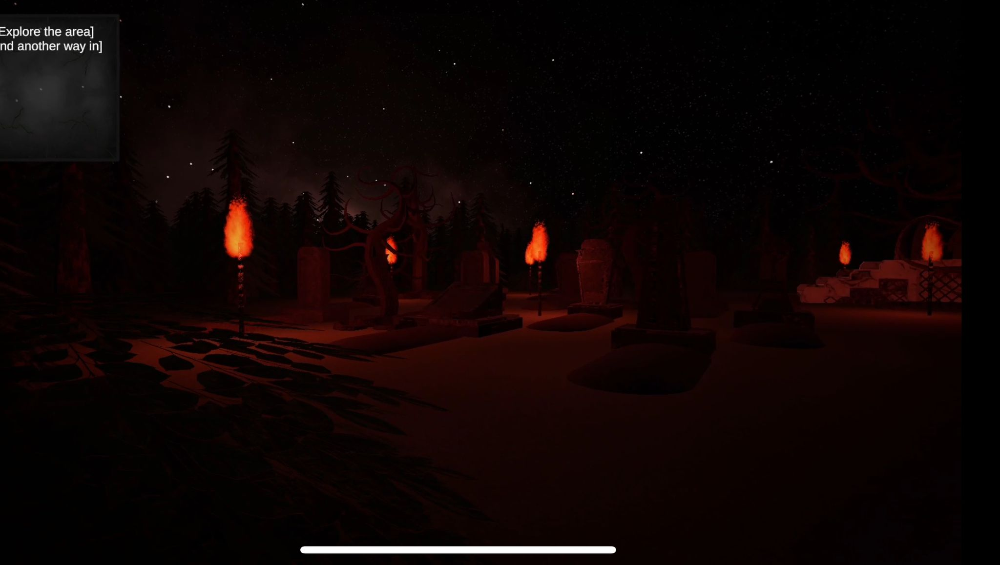
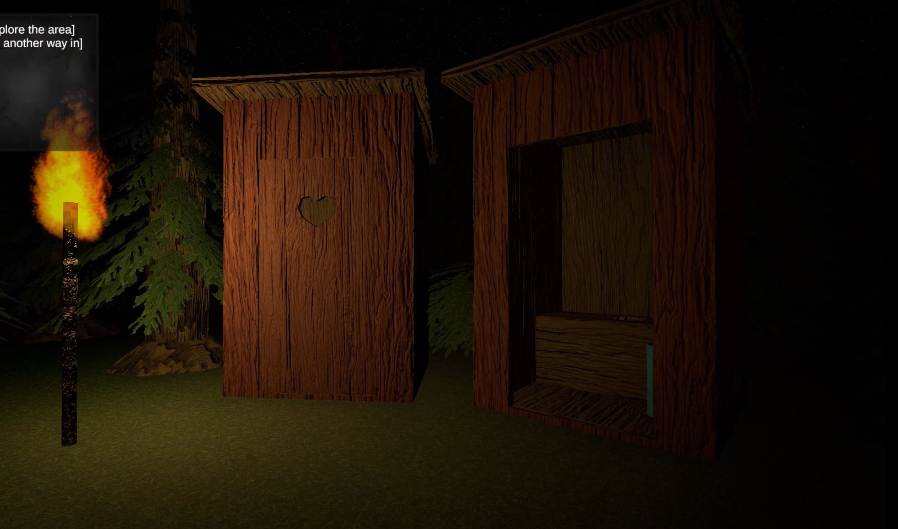
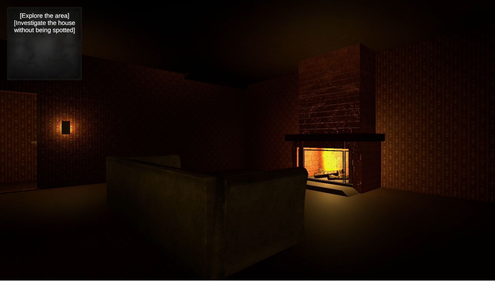
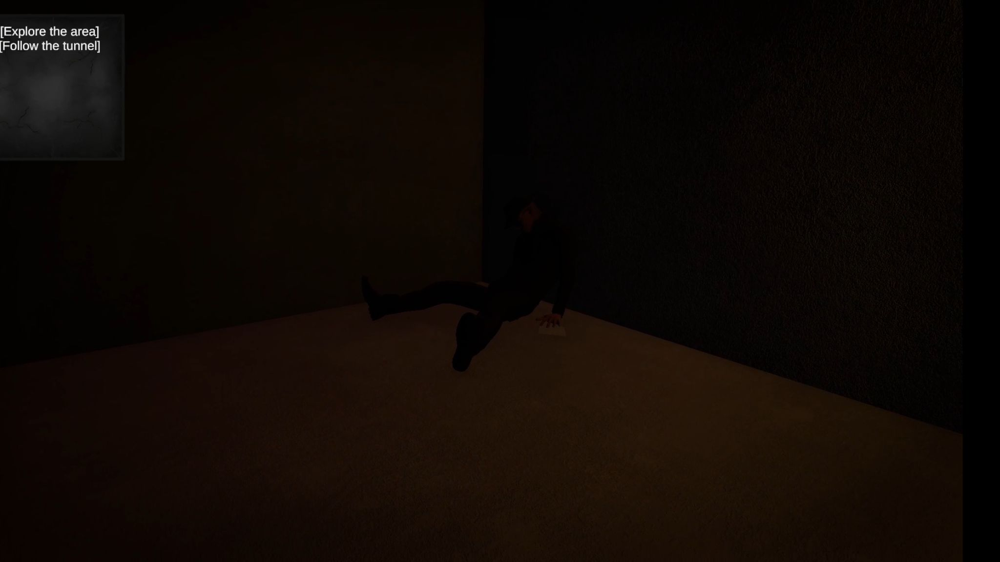
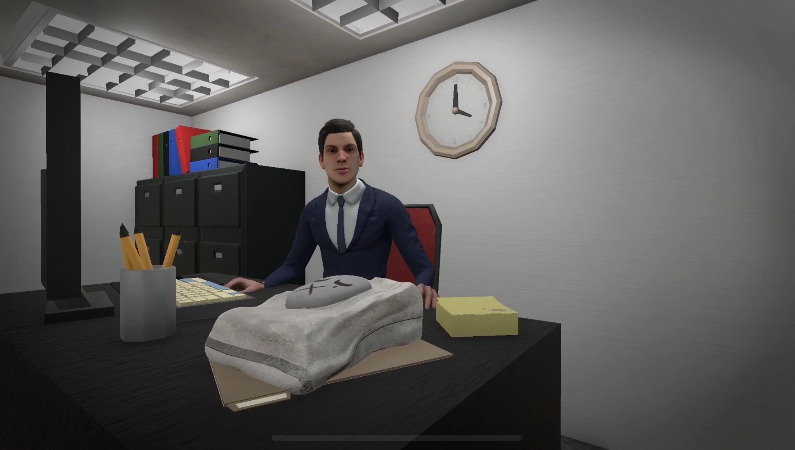
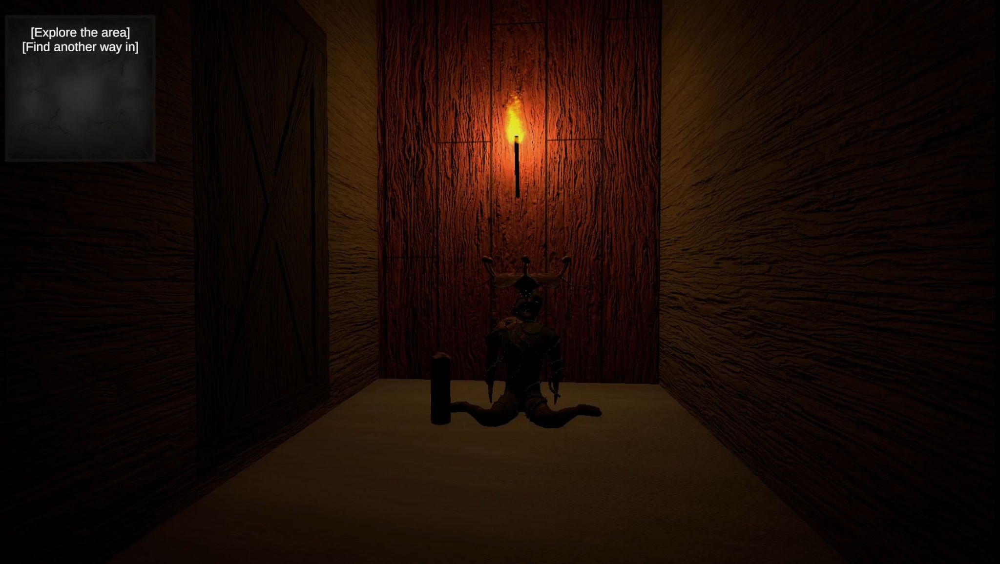
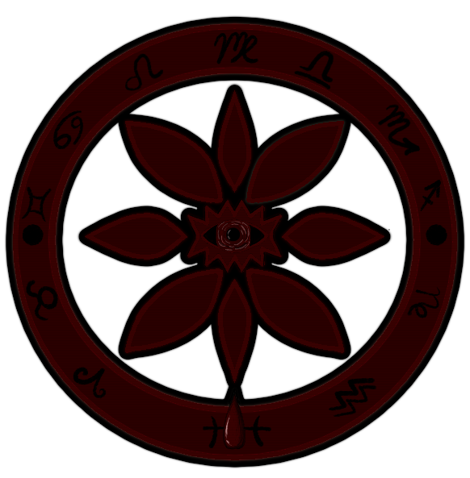

About Bloodbloom
Bloodbloom is a creepy and surreal 3D horror game I created with a team for a school project. It takes place in a strange, unsettling world ruled by a cult that worships a bloody flower god. The game blends horror with uncanny visuals and eerie sound design to create an atmosphere that constantly keeps the player on edge.
The idea began with me and Diana, we wanted to push ourselves to make something eerie, creative, and weirdly fun. Thankfully, William joined in and made the process smoother, and we teamed up with a group of talented 3D design students: Kalle, Juho, Serhi, and Denys. Together, we brought this twisted vision to life.
Bloodbloom gave us the chance to dive into storytelling and visual atmosphere as a group. It was also a big first for me: my first time using Unity for 3D, collaborating through GitHub, and learning basic Blender skills. It challenged me in all the right ways and became one of the most memorable projects I’ve worked on.
What I Did
- Developed the game concept and story with my teammates
- Collaborated on game design and planning
- Created concept art, wrote lore documents and notes, and designed easter eggs
- Made 3D placeholders and the key 3D model using Blender
- Designed all 2D UI elements including menus, settings, and buttons using Krita
- Helped choose lighting setups for scenes
- Used GitHub for version control with teammates
- Selected colour palettes for the main scene area to guide the artists
- Worked with Diana on the story flow and wrote dialogue
- Ensured story and dialogue flow well together
- Coded the 1st person camera view
- Programmed player character movement
- Designed and scripted the ending credits scene, including the Star Wars style scrolling text effect
Screenshots
      Development Notes
This project really pushed me to learn more about Unity’s 3D tools and Blender modeling, plus working as a team using GitHub was a whole new experience. It was my first time making a 3D horror game with a weird, creepy vibe, which was both challenging and fun. I helped come up with the game concept and story with my teammates, wrote lore and easter eggs, and made concept art and 2D UI stuff in Krita. I also coded the first person camera and player movement, and even designed and coded the ending credits with that classic Star Wars scrolling text look. Working with my talented friends and 3D artists was awesome we all shared ideas and helped build the strange world of the Bloodbloom Collective together. This project showed me how teamwork and creativity can really bring a weird, spooky game to life.